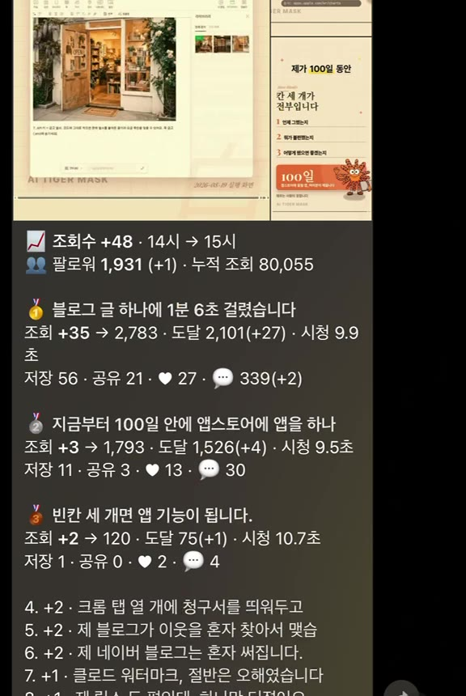

전체 조회수는 매일 오르는데, 그게 어느 영상 덕인지는 인스타가 안 알려줍니다. 매시 정각에 편별로 재서, 오른 것만 골라 폰으로 보내는 도구입니다.
인스타 인사이트를 열면 계정 전체 조회수가 나옵니다. 지난 7일, 지난 30일. 매일 오릅니다. 그런데 그 증가분이 어느 영상에서 왔는지는 안 나옵니다. 영상별로 들어가면 그 영상의 누적 조회수만 보입니다.
공식 API 도 마찬가지입니다. 지금 이 영상이 2,783 이라고만 알려주고, 한 시간 전에 얼마였는지는 안 알려줍니다.
한 시간마다 재서 빼기만 하면 됩니다. 그러면 이런 걸 알게 됩니다.

맨 위가 한 시간 동안의 전체 증가분과 팔로워 수, 그 아래가 많이 오른 순서입니다. 편마다 조회·도달·저장·좋아요·댓글·평균 시청 초가 붙고, 늘어난 값에는 괄호로 증가분이 붙습니다. 제목을 누르면 그 릴스로 바로 갑니다.
| 무엇 | 왜 필요한가 |
|---|---|
| 프로페셔널 계정 | 인스타 앱에서 비즈니스나 크리에이터로 전환. 개인 계정은 인사이트 자체가 안 나옵니다 |
| Meta 개발자 앱 | 내 계정 수치를 읽어올 토큰을 받는 곳. 무료 |
| 텔레그램 봇 | 알림을 받을 통로. 무료, 가입도 필요 없습니다 |
| Cloudflare 계정 | 한 시간마다 대신 깨워줄 서버. 무료 플랜으로 됩니다 |
개발을 몰라도 됩니다. 아래 코드를 클로드 코드에게 그대로 저장시키고, 나오는 명령만 순서대로 치면 됩니다.
@BotFather 를 찾아 대화를 엽니다/newbot 을 보내고 이름을 정하면 봇 토큰을 줍니다. 이게 TG_TOKENhttps://api.telegram.org/bot<봇토큰>/getUpdates 를 엽니다"chat":{"id":숫자} 의 숫자가 TG_CHATgetUpdates 가 비어 있으면 3번을 안 한 것입니다. 봇에게 먼저 말을 걸어야 대화방이 생깁니다.
instagram_business_basic 과 instagram_business_manage_insights 를 넣습니다. 이 둘이 없으면 수치가 안 옵니다여기서 받은 건 짧게 살다 죽는 토큰입니다. 60일짜리로 바꿔 두세요.
# ① 단기 토큰(앱 대시보드에서 복사한 것)을 60일짜리로 바꾼다 curl "https://graph.instagram.com/access_token?grant_type=ig_exchange_token&client_secret=<앱시크릿>&access_token=<단기토큰>" # ② 60일이 지나기 전에 한 번씩 늘려준다(만료되면 처음부터 다시 받아야 한다) curl "https://graph.instagram.com/refresh_access_token?grant_type=ig_refresh_token&access_token=<장기토큰>"
장기 토큰도 60일이면 만료됩니다. 만료되면 알림이 조용히 끊깁니다. 위 두 번째 명령을 한 달에 한 번쯤 돌리거나, 클로드에게 "토큰 만료 전에 자동으로 갱신하는 코드도 넣어줘"라고 하세요.
터미널에서 순서대로 칩니다. 중간에 로그인 창이 뜨면 그대로 로그인하면 됩니다.
npm create cloudflare@latest ig-views -- --type hello-world cd ig-views npx wrangler kv namespace create SNAP # 찍히는 id 를 wrangler.toml 에 npx wrangler secret put IG_TOKEN # 인스타 장기 토큰 npx wrangler secret put TG_TOKEN # 텔레그램 봇 토큰 npx wrangler secret put TG_CHAT # 내 chat_id npx wrangler secret put ADMIN_KEY # 아무 문자열(지금 돌려보기용 열쇠) npx wrangler deploy
그리고 설정 파일을 이렇게 맞춥니다.
name = "ig-views" main = "src/index.js" compatibility_date = "2025-12-01" # 매시 정각에 깨운다. 서버 시각은 UTC 지만 한국과 시차가 정시라 그대로 맞는다. [triggers] crons = ["0 * * * *"] # 스냅샷 보관함. id 는 아래 kv namespace create 명령이 찍어준 값을 넣는다. [[kv_namespaces]] binding = "SNAP" id = "여기에_붙여넣기"
wrangler.jsonc 로 만들어지기도 합니다. 그때는 클로드에게 "이 내용을 jsonc 로 바꿔서 넣어줘"라고 하면 됩니다. 들어가는 값은 같습니다.올린 뒤 크론을 기다리지 말고 바로 확인해 보세요. 주소 뒤에 /run?key=<ADMIN_KEY> 를 붙여 열면 그 자리에서 한 번 돕니다. 첫 번은 비교 대상이 없어 알림이 안 옵니다. 한 시간 뒤 두 번째부터 옵니다.
src/index.js 로 저장하세요. 클로드 코드에게 "이 코드를 src/index.js 로 저장해줘"라고 하면 됩니다.
// 인스타 릴스별 조회수 증가를 매시간 텔레그램으로 받는다.
// ① 매시 정각에 릴스별 누적 수치를 재서 KV 에 저장
// ② 직전 스냅샷과 빼서 "어느 편이 몇 올랐는지"를 계산
// ③ 썸네일 + 링크 + 지표를 증가순으로 정렬해 텔레그램으로
// ★밤(KST 23~05시)에는 재기만 하고 보내지 않는다. 아침 첫 알림에 밤새 오른 몫이 통째로 실린다.
const GRAPH = "https://graph.instagram.com/v21.0";
const TG_FROM = 6; // 알림 시작 시각(KST)
const TG_TO = 22; // 알림 종료 시각(KST)
const LIMIT = 30; // 한 번에 훑을 게시물 수. ★무료 플랜은 실행당 외부호출 50개가 상한이다
const KEEP = 14 * 24 * 3600;
export default {
async scheduled(event, env, ctx) {
ctx.waitUntil(run(env, false));
},
// 크론을 안 기다리고 지금 확인용. https://<주소>/run?key=<ADMIN_KEY>
async fetch(req, env) {
const u = new URL(req.url);
if (u.pathname === "/run" && u.searchParams.get("key") === env.ADMIN_KEY) {
return new Response(await run(env, true));
}
return new Response("ok");
},
};
async function run(env, force) {
const kst = new Date(Date.now() + 9 * 3600000); // ★워커는 UTC 로 돈다. 안 더하면 하루가 밀린다
const stamp = kst.toISOString().slice(0, 13); // 2026-08-20T15
const hour = kst.getUTCHours();
if (!force && (await env.SNAP.get("h:" + stamp))) return "이미 있음 " + stamp;
const items = await fetchRows(env);
if (!items.length) return "빈 응답(토큰을 확인하세요)";
const followers = await fetchFollowers(env);
const hours = JSON.parse((await env.SNAP.get("hours")) || "[]");
const notified = (await env.SNAP.get("notified")) || "";
let base = hours.filter((h) => h < stamp).pop();
if (notified && notified < stamp && hours.includes(notified)) base = notified;
await env.SNAP.put("h:" + stamp, JSON.stringify({ stamp, followers, items }), { expirationTtl: KEEP });
if (!hours.includes(stamp)) hours.push(stamp);
hours.sort();
await env.SNAP.put("hours", JSON.stringify(hours.slice(-400)));
if (hour < TG_FROM || hour > TG_TO) return "저장만 " + stamp + "(야간)";
if (!base) return "저장 " + stamp + "(첫 실행이라 비교 대상 없음)";
const prev = JSON.parse((await env.SNAP.get("h:" + base)) || "null");
if (!prev) return "저장 " + stamp + "(기준 스냅샷 없음)";
const pm = new Map(prev.items.map((p) => [p.id, p]));
const moved = items
.map((m) => {
const p = pm.get(m.id) || {};
return {
...m,
isNew: !pm.has(m.id),
dv: m.views - (p.views || 0),
dr: m.reach - (p.reach || 0),
dsv: m.saved - (p.saved || 0),
dl: m.likes - (p.likes || 0),
dc: m.comments - (p.comments || 0),
};
})
.filter((m) => m.dv > 0)
.sort((a, b) => b.dv - a.dv);
if (!moved.length) return "증가 없음, 알림 생략"; // ★기준선을 그대로 둬서 다음 알림이 합쳐 낸다
const nf = (n) => n.toLocaleString("en-US");
const d = (n) => (n > 0 ? "(+" + nf(n) + ")" : "");
const esc = (t) => t.replace(/&/g, "&").replace(/</g, "<").replace(/>/g, ">");
const gap = Math.round((Date.parse(stamp + ":00:00Z") - Date.parse(base + ":00:00Z")) / 3600000);
const dF = followers - (prev.followers || followers);
const lines = [
"📈 <b>조회수 +" + nf(moved.reduce((a, b) => a + b.dv, 0)) + "</b> · " + base.slice(11) + "시 → " + stamp.slice(11) + "시" + (gap > 1 ? " (" + gap + "시간)" : ""),
"👥 팔로워 <b>" + nf(followers) + "</b>" + (dF !== 0 ? " (" + (dF > 0 ? "+" : "") + nf(dF) + ")" : ""),
"",
];
moved.slice(0, 3).forEach((m, i) => {
lines.push("<b>" + ["🥇", "🥈", "🥉"][i] + ' <a href="' + m.link + '">' + esc(m.hook) + "</a></b>" + (m.isNew ? " 🆕" : ""));
lines.push("조회 <b>+" + nf(m.dv) + "</b> → " + nf(m.views) + " · 도달 " + nf(m.reach) + d(m.dr) + " · 시청 " + m.awt + "초");
lines.push("저장 " + nf(m.saved) + d(m.dsv) + " · ♥ " + nf(m.likes) + d(m.dl) + " · 💬 " + nf(m.comments) + d(m.dc));
lines.push("");
});
moved.slice(3, 8).forEach((m, i) => {
lines.push(i + 4 + ". +" + nf(m.dv) + ' · <a href="' + m.link + '">' + esc(m.hook) + "</a>");
});
while (lines.join("\n").length > 1000 && lines.length > 6) lines.pop();
const text = lines.join("\n").trim();
const api = "https://api.telegram.org/bot" + env.TG_TOKEN;
const photos = moved.slice(0, 3).map((m) => m.thumb).filter(Boolean);
let sent = false;
if (photos.length) {
const media = photos.map((url, i) =>
i === 0 ? { type: "photo", media: url, caption: text, parse_mode: "HTML" } : { type: "photo", media: url });
const res = await fetch(api + "/sendMediaGroup", {
method: "POST", headers: { "Content-Type": "application/json" },
body: JSON.stringify({ chat_id: env.TG_CHAT, media }),
});
sent = res.ok;
}
if (!sent) {
// ★썸네일 주소는 서명이 붙어 있어 텔레그램이 못 받아오는 날이 있다. 그때는 글만이라도 보낸다.
const res = await fetch(api + "/sendMessage", {
method: "POST", headers: { "Content-Type": "application/json" },
body: JSON.stringify({ chat_id: env.TG_CHAT, text, parse_mode: "HTML" }),
});
sent = res.ok;
}
if (sent) await env.SNAP.put("notified", stamp);
return "저장 " + stamp + " · 움직인 편 " + moved.length + " · 전송 " + sent;
}
async function fetchRows(env) {
const fields = "id,timestamp,permalink,caption,thumbnail_url,like_count,comments_count";
const res = await fetch(GRAPH + "/me/media?fields=" + fields + "&limit=" + LIMIT + "&access_token=" + env.IG_TOKEN);
if (!res.ok) return [];
const list = (await res.json()).data || [];
const rows = await Promise.all(list.map(async (m) => {
// ★릴스는 profile_visits·follows 를 안 준다. 미지원 항목을 하나라도 섞으면 호출 전체가 400 이다.
const metrics = "views,reach,saved,shares,ig_reels_avg_watch_time";
const r = await fetch(GRAPH + "/" + m.id + "/insights?metric=" + metrics + "&period=lifetime&access_token=" + env.IG_TOKEN);
if (!r.ok) return null;
const ins = {};
for (const x of (await r.json()).data || []) ins[x.name] = (x.values && x.values[0] ? x.values[0].value : 0) || 0;
return {
id: m.id,
link: m.permalink,
thumb: m.thumbnail_url,
hook: (m.caption || "").split("\n")[0].slice(0, 24),
views: ins.views || 0,
reach: ins.reach || 0,
saved: ins.saved || 0,
shares: ins.shares || 0,
likes: m.like_count || 0,
comments: m.comments_count || 0,
awt: Math.round((ins.ig_reels_avg_watch_time || 0) / 100) / 10, // ★API 는 밀리초로 준다
};
}));
return rows.filter(Boolean);
}
async function fetchFollowers(env) {
const res = await fetch(GRAPH + "/me?fields=followers_count&access_token=" + env.IG_TOKEN);
if (!res.ok) return 0;
return (await res.json()).followers_count || 0;
}
토큰 권한(스코프)에 instagram_business_manage_insights 가 빠졌거나, 계정이 아직 프로페셔널이 아닙니다. 둘 다 맞는데도 비면 토큰이 만료된 것입니다.
편별로 물어보면 does not support ... for this media product type 이 돌아옵니다. 더 나쁜 건, 지원 안 되는 항목을 하나라도 같이 물어보면 호출 전체가 실패한다는 점입니다. 그래서 코드의 metrics 줄에 항목을 함부로 늘리면 알림이 통째로 멈춥니다. 팔로워는 계정 단위로만 셉니다.
클라우드플레어 서버는 세계 표준시로 돕니다. 한국 시각으로 바꾸지 않으면 아침에 올린 게시물이 전날 것으로 기록되고, 밤에 조용히 있어야 할 시간에 알림이 옵니다. 코드에서 Date.now() + 9시간 을 더하는 줄이 그것입니다.
영상 한 편마다 한 번씩 물어보기 때문에, 30편이면 외부 호출이 30번을 넘습니다. 무료 플랜은 한 번 실행에 50번까지입니다. 코드의 LIMIT 을 30 으로 둔 이유입니다. 더 많이 보려면 최근 것만 보거나, 시간마다 나눠 도는 방식으로 바꾸거나, 유료 플랜으로 올려야 합니다.
인스타 썸네일 주소에는 서명이 붙어 있어 텔레그램이 못 받아올 때가 있습니다. 그래서 코드에 사진 전송이 실패하면 글만이라도 보내는 대비를 넣어뒀습니다. 이게 없으면 그 시간 알림이 통째로 사라집니다.
새벽이 아니어도 한 시간 동안 조회수가 하나도 안 오를 수 있습니다. 그때는 보내지 않고 기준선도 그대로 둡니다. 다음 알림이 그 시간까지 합쳐서 냅니다. 안 그러면 "증가 0" 이라는 빈 알림이 계속 와서 결국 알림을 꺼버리게 됩니다.
클로드 코드에게 이렇게 말하면 이어서 붙일 수 있습니다.
| 하루 한 점 보관 | "하루에 한 번은 따로 저장해서 날짜별 기록도 남겨줘" |
| 역주행 감지 | "올린 지 일주일 넘은 편이 갑자기 오르면 따로 알려줘" |
| 저장 위주로 | "조회수 말고 저장이 많이 붙은 순서로 정렬해줘" |
| 표로 받기 | "하루 치를 모아서 아침에 표 한 장으로 보내줘" |
| 내 컴퓨터로 | "이걸 클라우드 말고 내 컴퓨터에서 돌리는 버전으로 바꿔줘" |